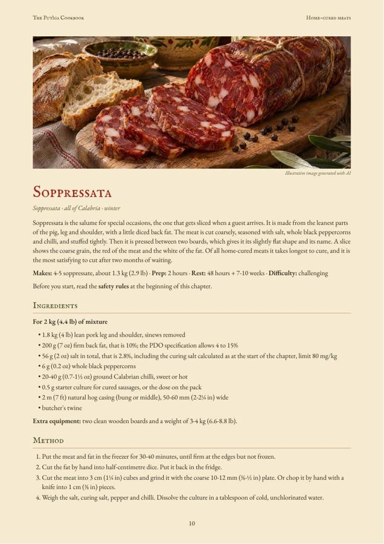
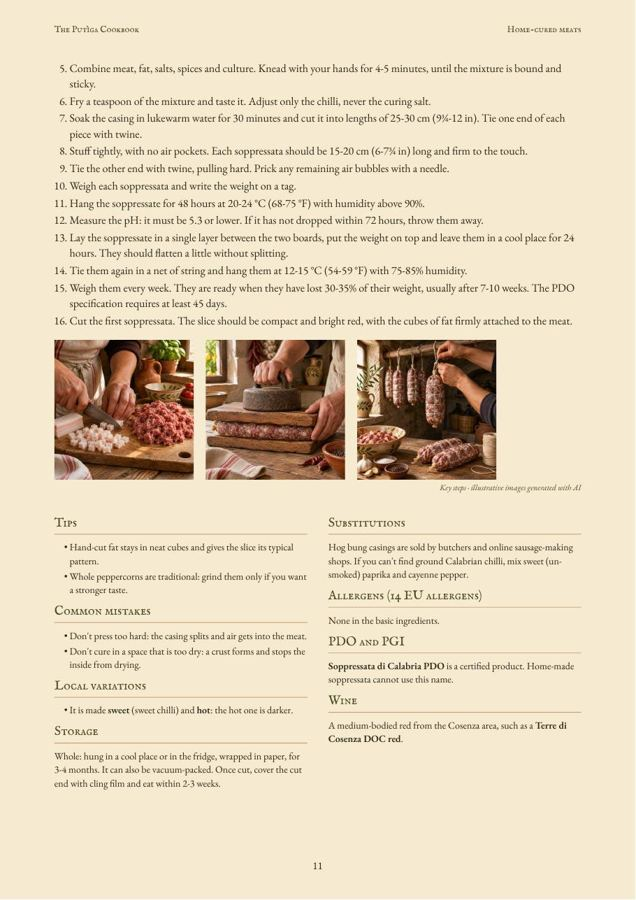
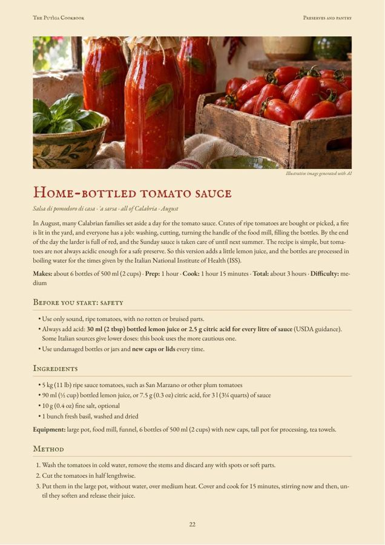
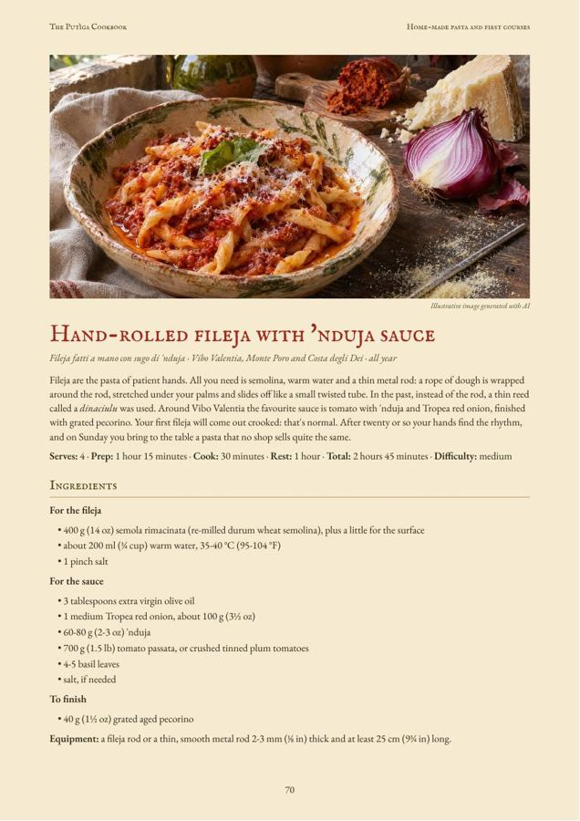
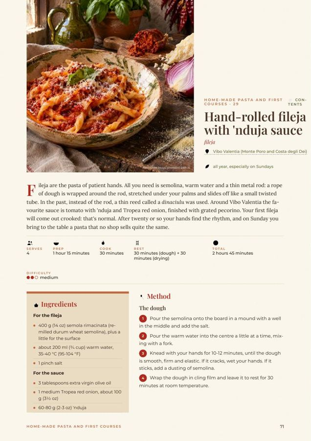
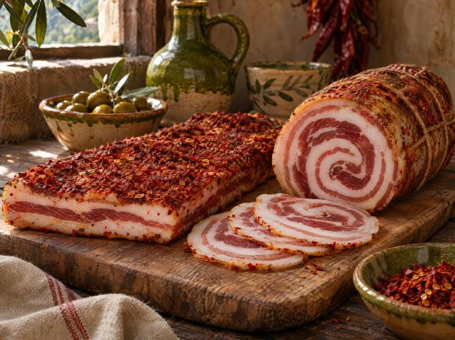
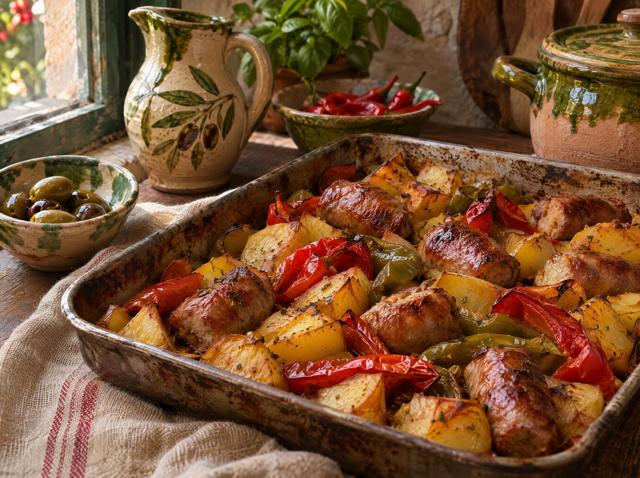
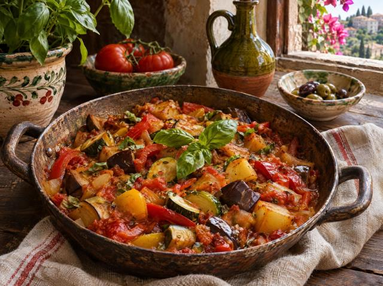
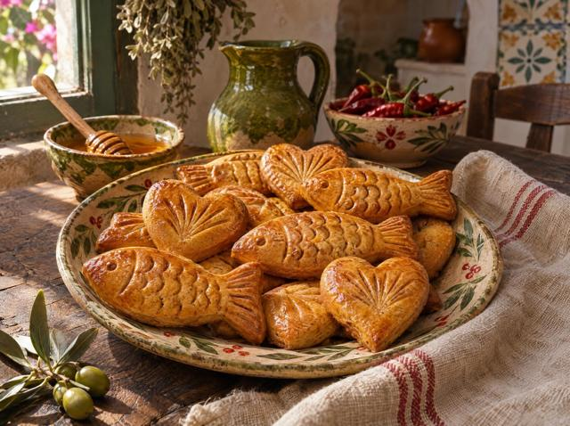

The flavours of Calabria, in your own kitchen.
The Putìga Cookbook
60 Calabrian home recipes, from cured meats to festive sweets
Southern Italian home cooking from Calabria, explained step by step: from pork-curing days to late-summer preserves, from hand-rolled pasta to Christmas and Easter sweets.
- 60recipes
- 9chapters
- 150A4 pages
- 241illustrations


What's inside
Recipes that work the first time
Metric quantities with US measures in brackets, numbered steps with one action at a time, and the signs to look for: colour, smell, texture, temperature.
Cured meats and preserves, made safely
The preserves follow the Italian National Institute of Health guidelines. The cured meats explain curing salt, pH and weight loss. Old methods that are no longer safe are told as history.
Everything around the recipe
For every recipe: tips, common mistakes, local variations, storage, substitutions for cooks outside Italy, EU allergens, PDO and PGI products, a Calabrian DOC wine.
Glossary and indexes
Clickable contents, a glossary of dialect names, conversion tables and an index by ingredient.
Flip through it
Tap the right-hand page to turn it.






60 recipes in 9 chapters

Home-cured meats6
- Fresh and dry sausage
- Soppressata
- Capocollo
- Flat and rolled pancetta
- 'Nduja (spreadable spicy pork salume)
- Pork cracklings and lard
 Preserves and pantry10
Preserves and pantry10
- Home-bottled tomato sauce
- Sun-dried tomatoes in oil
- Aubergines (eggplant) in oil
- Stuffed chillies in oil
- Dried chilli, chilli powder and chilli oil
- Crushed green olives
- Oven-dried black olives
- Mushrooms in oil
- Sardella: its history and a version for today
- Fig honey (fig syrup)
 Antipasti and home cooking6
Antipasti and home cooking6
- Aubergine (eggplant) fritters
- Bread balls in tomato sauce
- Home-made ricotta (fresh lemon cheese)
- Tropea red onion frittata
- Courgette (zucchini) flower fritters
- Peppers and eggs
 Bread and leavened doughs6
Bread and leavened doughs6
- Durum wheat home bread
- Pitta catanzarese (Catanzaro ring bread)
- Potato bread
- Cuddrurieddri (fried potato dough rings)
- Anchovy zeppole (fried dough puffs)
- Frese (twice-baked bread rings) with tomato and oregano
 Home-made pasta and first courses10
Home-made pasta and first courses10
- Hand-rolled fileja with 'nduja sauce
- Maccheroni al ferretto with Sunday ragù
- Struncatura with anchovies and breadcrumbs: its history and a version for today
- Lagane with chickpeas
- Millecosedde (mixed bean and pasta soup)
- Pasta china (festive baked pasta)
- Pasta and beans with pork rind
- Pasta and potatoes alla tiella (one-pan baked pasta)
- Pasta with sun-dried tomatoes, olives and breadcrumbs
- Licurdia (onion and bread soup)

Meat main courses6
- Morzello alla catanzarese (spicy tripe stew)
- Goat braised with wine and tomato
- Frittole (pork cuts slow-cooked in their fat)
- Baked sausage with potatoes and peppers
- Vrasciole (long Sunday meatballs)
- Easter lamb with peas
 Fish main courses5
Fish main courses5
- Swordfish alla bagnarota
- Stockfish alla mammolese
- Sweet and sour tuna with onions
- Alici arriganate (oregano-baked anchovies)
- Salt cod with potatoes and olives

Side dishes5
- Pipi e patate (fried peppers and potatoes)
- Patate 'mpacchiuse (sticky pan-fried potatoes)
- Ciambotta (summer vegetable stew)
- Calabrian aubergine parmigiana
- Pipi chini (peppers stuffed with breadcrumbs)

Festive sweets6
- Pitta 'mpigliata (Christmas pastry roses with walnuts and honey)
- Petrali (fig-filled Christmas pastries)
- Cuzzupa (Easter bread with whole eggs)
- Mostaccioli of Soriano (honey biscuits)
- Turdilli with fig honey (fried Christmas gnocchi)
- Giurgiulena (sesame and honey brittle)

Taste it before you buy it
Download the fileja with 'nduja sauce recipe for free, laid out exactly as in the book. No email, no sign-up.
Download a free recipe ↓Who it's for
For Italian-Americans and anyone with Calabrian roots who wants to cook the dishes of home. For every cook who loves Italian regional food and wants precise recipes, with no shortcuts and no made-up secrets.
The complete book
$14.99
- Full-colour PDF, 150 pages, plus the EPUB edition
- Read it on phone, tablet or computer
- Printable on A4 for personal use
- Instant download after payment
Secure payment on the sales platform. Sales tax or VAT is calculated at checkout.
Questions
How do I get the book?
After payment you get a link to download the PDF, also by email. Read it on a computer, tablet or phone.
Can I print it?
Yes, it is laid out on A4 pages, for personal use.
Are these authentic Calabrian recipes?
Of course. They are Calabrian home-cooking dishes, chosen area by area, from Vibo Valentia to the Sila mountains, from Reggio to Cosenza, and checked one by one against Calabrian sources: PDO and PGI product specifications, official lists of traditional foods, regional cookbooks. The texts were written from scratch for this book.
Are US measures included?
Yes: every quantity is in grams and millilitres with oz, cups and °F in brackets.
Can I get a refund?
Digital content delivered immediately is not covered by the EU right of withdrawal. See the terms of sale for details.